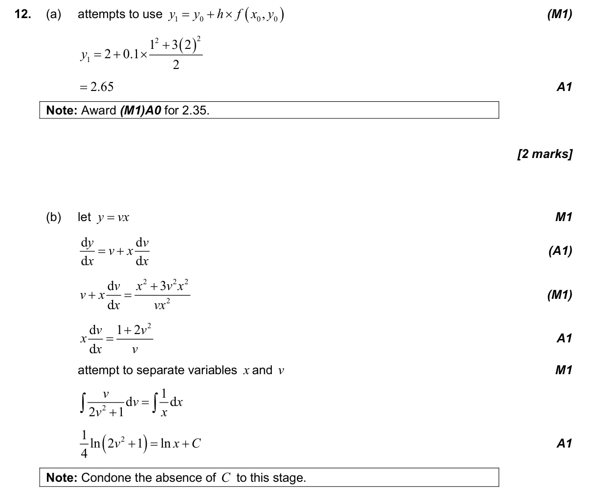
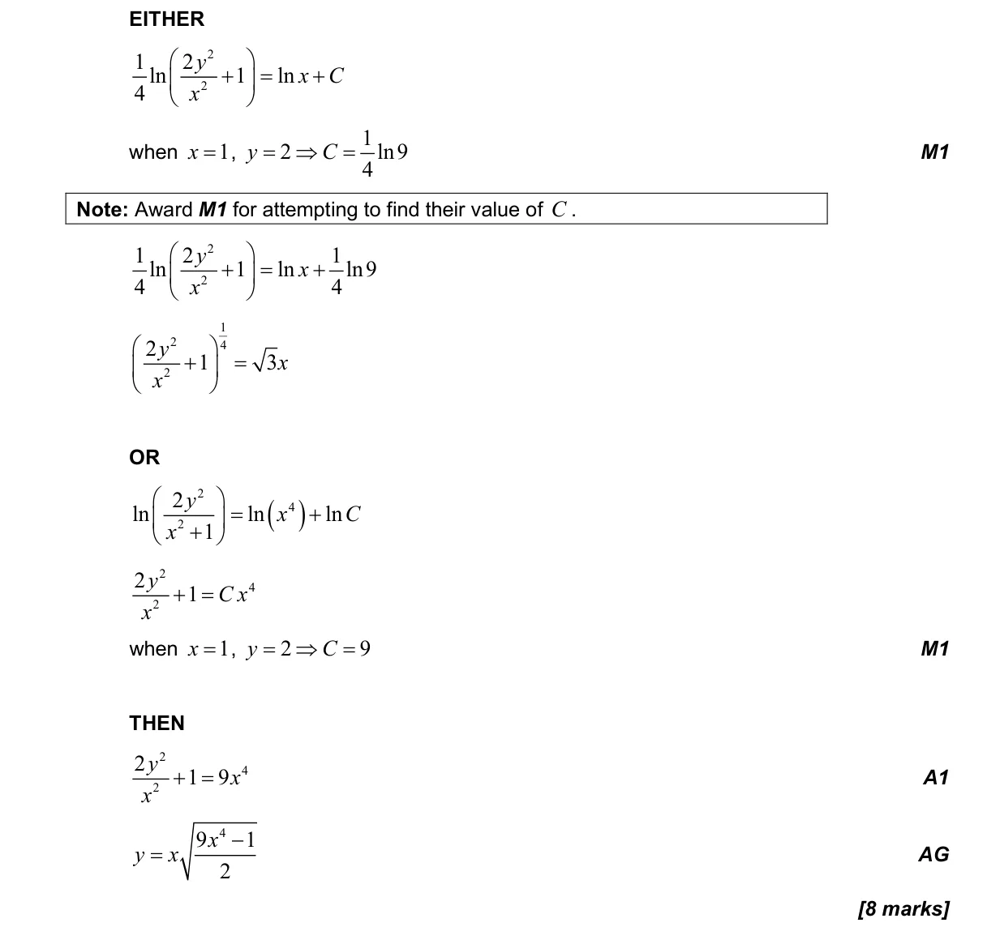
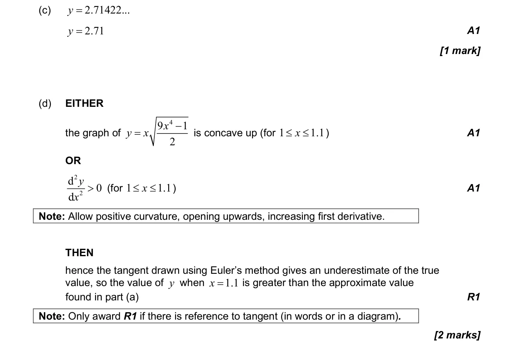
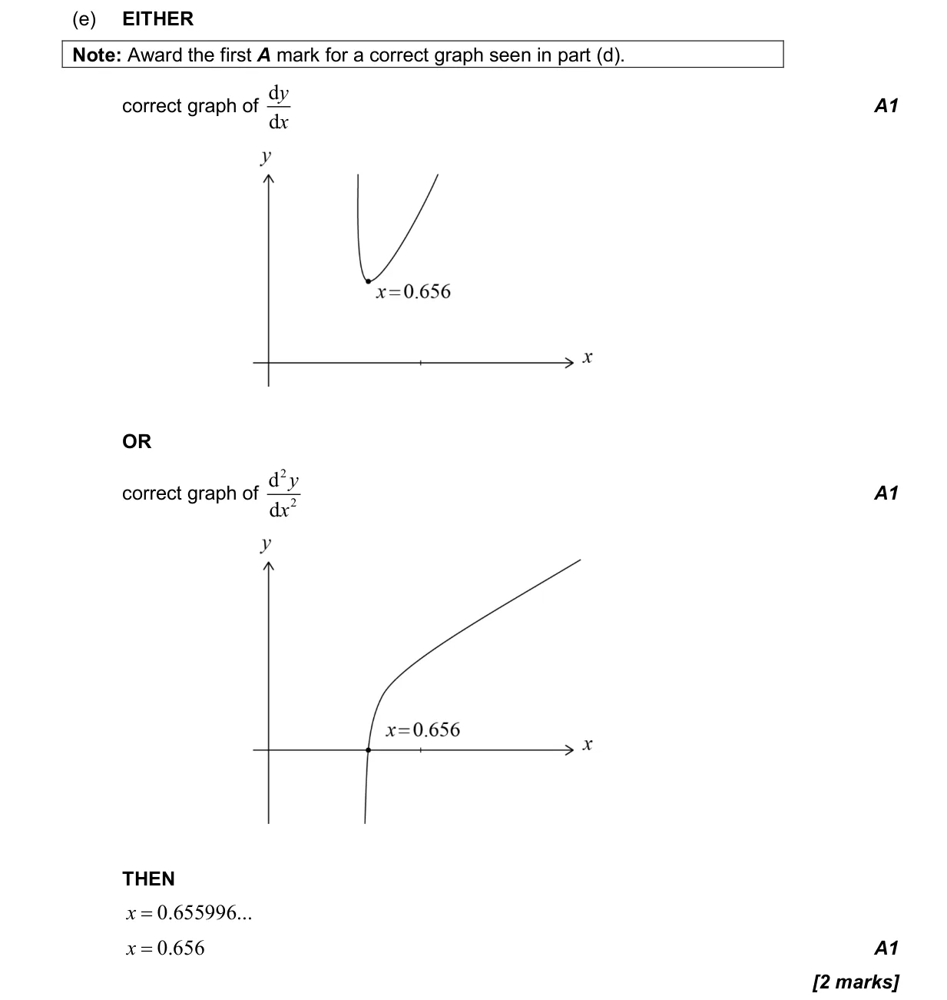
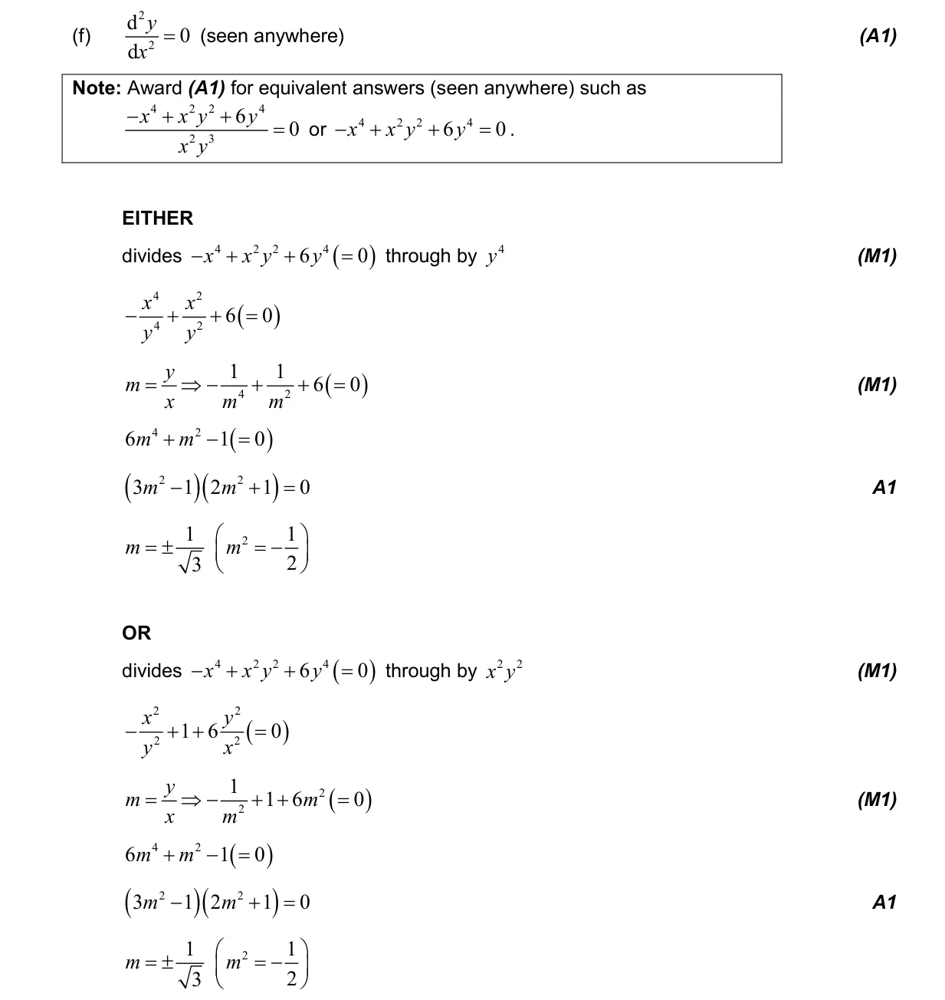
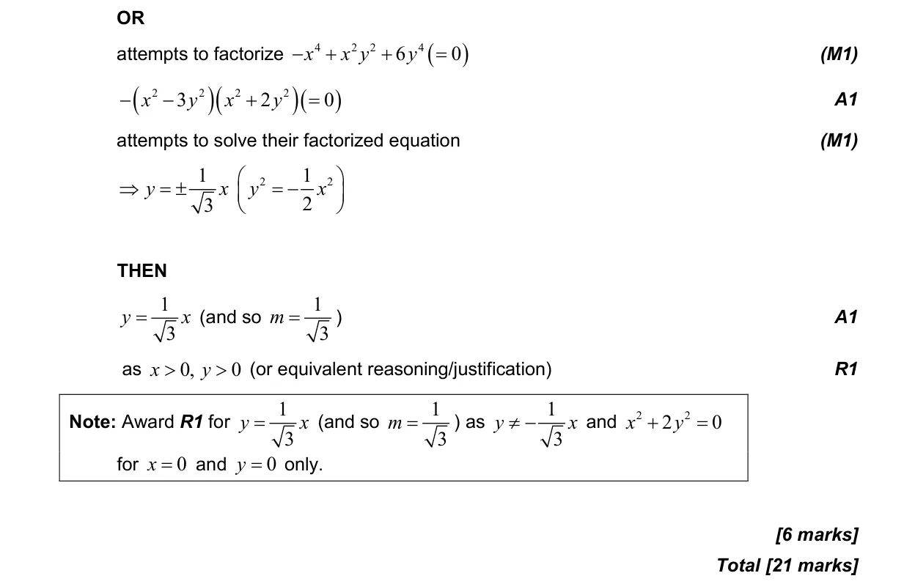

5.18 First-order differential equations5.10 Indefinite integration, reverse chain and substitution5.8 Optimization, local extrema and points of inflexion2.7 Solutions of quadratic equations and inequalities, discriminant and nature of roots5.7 The second derivative2.2 Functions, notation, domain, range and inverse as reflection
Question

Markscheme





